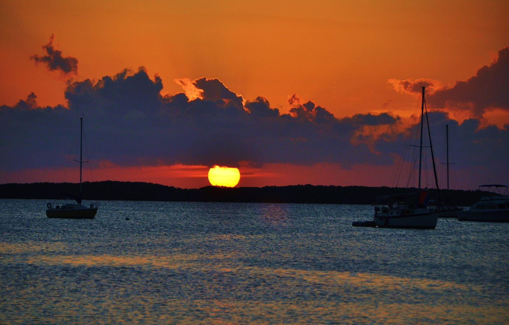
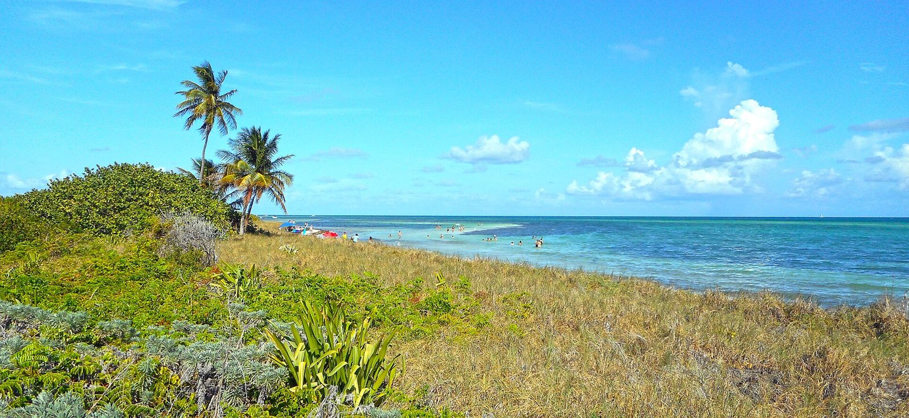

Lazy Days
Islamorada · MM 79.8 (79867 Overseas Hwy)
Oceanfront seafood with a beach tiki bar and dock, practically next door to The Palms. They'll cook your catch, and the downstairs has a seafood market and gift shop.
Official website ↗A locals' guide to Islamorada, Marathon and the nearby Keys, all within a short drive of Mile Marker 79.9
Mile markers (MM) count down toward Key West. The Palms is at MM 79.9, so lower numbers are south (toward Marathon and Key West) and higher numbers are north (toward Key Largo and Miami).



Tap the Locals' Favorites chip above to see the long-running local spots (stars in the cards) across all the categories. We marked a place that says it has been around for decades or that calls itself a local gathering spot, plus a few that Palms owners named as personal favorites. The history claims are each business's own, and none of this is a ranking.
Islamorada · MM 79.8 (79867 Overseas Hwy)
Oceanfront seafood with a beach tiki bar and dock, practically next door to The Palms. They'll cook your catch, and the downstairs has a seafood market and gift shop.
Official website ↗Islamorada · MM 79.8 (79786 Overseas Hwy)
Rebuilt on the historic 1938 Papa Joe's site and opened in 2024, with a dining room, a 21+ tiki bar, a lawn and dock access, and sunset views of both the Atlantic and the bay. Practically a neighbor of The Palms, and a Palms owner favorite.
Official website ↗Islamorada · MM 82 bayside
Look for the mermaid! Breakfast through dinner on the Florida Bay shoreline, famous for sunset celebrations and nightly live music.
Official website ↗Islamorada · MM 77.5 bayside
Waterfront dining right at Robbie's Marina, so you can eat and then go feed the tarpon.
Official website ↗Islamorada · MM 81.5 bayside
Bass Pro-owned seafood restaurant with bayside outdoor seating, sunsets and saltwater aquariums tableside. The restaurant says it first opened here in 1948.
Official website ↗Islamorada · MM 81.6 bayside
Barefoot beach café by day and the elegant two-story Pierre's upstairs for French-fusion dinners, all facing Florida Bay sunsets. Reservations are recommended.
Official website ↗Islamorada · MM 81.2
A Keys landmark for over 75 years, featured on Diners, Drive-Ins and Dives, with a wine wall and a classic Keys-casual vibe.
Official website ↗Islamorada · MM 81.7 (81701 Old Highway)
Sushi and Island-Asian dishes alongside a wood-fire grill, with a wine and sake list, in a historic Old Highway house with a wrap-around porch. A Palms owner favorite. Dinner service; the website lists closed days, so check before you go.
Official website ↗Islamorada · MM 81.6 oceanside
Dock-to-dish seafood and a big wine list on the old road just off the highway. Dinner service; the website lists closed days, so check before you go.
Official website ↗Islamorada · MM 82.7 bayside (82758 Overseas Hwy)
A family-run bakery, deli, pizzeria and espresso bar known for its gourmet pizzas, with indoor and patio seating, plus craft beer and wine. A Palms owner favorite.
Official website ↗Islamorada · MM 85 (85501 Overseas Hwy)
Waterfront seafood in Islamorada, a short drive up the highway from The Palms.
Official website ↗Islamorada · MM 82.2 oceanside
The neon-yellow taproom with Sandbar Sunday beer, rum, vodka and gin samples, a beer garden and a food truck. Their site lists it as kid- and pet-friendly.
Official website ↗Marathon · MM 49.5 Gulf side
Seafood restaurant, fish market and marina on the Gulf side of Marathon (3502 Gulfview Ave).
Official website ↗Marathon · MM 47.5 (1200 Oceanview Ave)
Waterfront restaurant and marina in Marathon that bills itself as home of the "Best Key Lime Pie in Florida." Taste-test for yourself.
Official website ↗Marathon · MM 49
Marathon breakfast-and-more spot with a garden patio and tiki area. Open since 1984 and calls itself the locals' place for gossip, great food and service.
Official website ↗Cudjoe Key · MM 22.5 oceanside (22658 Overseas Hwy)
Fresh local seafood, innovative small plates and a boutique wine list on Cudjoe Key, in the Lower Keys. It's a longer drive south, and the website notes seasonal closures, so check before you go. A Palms owner favorite.
Official website ↗Key Largo · MM 99.4 (99336 Overseas Hwy)
Their website calls it Key Largo's longest running restaurant. A casual local-style stop on the drive to or from the mainland.
Official website ↗Islamorada · MM 79.8 oceanside
Right next door to The Palms. Established in 1944, home to dozens of backcountry, reef and offshore charter captains and a party boat. Book by phone or online.
Official website ↗Islamorada · MM 83.4
Marina with a fleet of about 20 charter boats and local full-time captains for backcountry flats, reef and offshore trips.
Official website ↗Marathon · MM 47.5 bayside
Boat rentals (18 to 28-foot boats) for fishing the Middle Keys on your own, plus links to charter captains.
Official website ↗Islamorada · MM 84.5
Marine-life park with dolphin, sea lion and stingray programs. The park posts its show schedule and map online; open daily per its website.
Official website ↗Islamorada · MM 77.5 bayside
Hand-feed giant silver tarpon from the dock at Robbie's of Islamorada. Fun for kids and a Keys classic. Check the website for current hours and fees.
Official website ↗Grassy Key (Marathon) · MM 59 Gulf side
Dolphin and sea lion encounters on Grassy Key, about 6 miles north of Marathon. Plan ahead; check the site for programs and hours.
Official website ↗Marathon · MM 48.5
A nonprofit sea turtle rescue, rehab and release center with guided tours. Reservations are recommended.
Official website ↗Marathon · MM 53 bayside
Aquarium and marine-life attraction at 11710 Overseas Highway, near Vaca Cut. Check website for hours and tickets.
Official website ↗Marathon · MM 50.5 Gulf side
Museum plus hammock nature trails, a quiet break from beach days.
Official website ↗Key Largo · MM 102 bayside
Dolphin encounters on the bay side of Key Largo. The place many people still know as Dolphin Cove became Dolphins Plus Bayside in 2014.
Official website ↗Tavernier · MM 93.6
Wild bird rescue and sanctuary (the Laura Quinn Wild Bird Sanctuary) with pelicans, herons and more.
Official website ↗Key Largo · MM 102.5
America's first undersea park. Snorkel and glass-bottom boat tours run through the park's concessionaire; reserve ahead.
Official website ↗Islamorada · MM 77.5 bayside
Kayak and paddleboard rentals plus guided backcountry and sunset mangrove tours.
Official website ↗Islamorada · MM 84.5 (Three Waters Marina)
Scuba and snorkel reef charters leave daily from Three Waters Resort & Marina. Snorkelers are welcome and the afternoon snorkel trip includes gear.
Official website ↗Islamorada · near MM 80.5 (96 Madeira Rd)
Family-run boat tours: Alligator Reef snorkeling, sandbar stops and Gulf-side sunset cruises.
Official website ↗Islamorada · MM 81.5 bayside (Bass Pro marina)
See the reef without getting wet, with reef and sunset glass-bottom boat tours. Check in early per the website.
Official website ↗Marathon · 5561 Overseas Hwy (about MM 50)
A 55,000 sq ft beach store billed as the world's largest, with bait and tackle, candy and gelato shops and the southernmost FlowRider indoor surf machine in the continental U.S.
Official website ↗Islamorada · MM 81.5 bayside (81576 Overseas Hwy)
Fishing and outdoor gear on the bay. Islamorada Fish Company and the Transparensea tour boats are at the same marina.
Official website ↗Islamorada · MM 86.7 bayside
Artisans' village with galleries and shops for local art, jewelry, glasswork, home decor and Keys souvenirs.
Official website ↗Islamorada · MM 73.5 oceanside
Free Village of Islamorada park with a boardwalk, picnic pavilions and calm, shallow water. Sunrise-to-sunset; the village lists rules (no grills, motorboats or fishing).
Official website ↗Islamorada (offshore) · off MM 78.5
Historic island about half a mile offshore. CLOSED to the public since April 2026 while its dock is rebuilt (up to six months). Check the park page for reopening.
Official website ↗Islamorada (bayside) · off MM 78.5
Virgin tropical hardwood forest island reached only by boat or kayak. The park page lists a Robbie's ferry on Fri/Sat/Sun afternoons; call ahead.
Official website ↗Islamorada · MM 85.5
State park built around an old railroad quarry of ancient fossilized coral. Check the park page for hours and tours.
Official website ↗Islamorada · MM 87 bayside
Village park with a shallow bay beach, tiki huts, playgrounds, and the Olympic-size Ron Levy Aquatic Center pool. Check the village page for hours and fees.
Official website ↗Islamorada · MM 81.5 to 81.6
WPA-built 1937 memorial to the victims of the 1935 Labor Day Hurricane, on the National Register of Historic Places.
Official website ↗Islamorada · MM 83 bayside
Museum of diving history, a good rainy-day stop. Check website for hours and admission.
Official website ↗Marathon · MM 47.5 (visitors center, 1090 Overseas Hwy)
Walk, bike or take the tram out to a historic island along the restored Old Seven Mile Bridge, about 2.2 miles each way.
Official website ↗Marathon to Little Duck Key · MM 40 to 47
The big bridge on the Overseas Highway, about 6.8 miles long. Stop at the Old Seven Mile Bridge walkway for the view.
Official website ↗Marathon · MM 50 (turn south)
Free City of Marathon beach park with pavilions, playgrounds, restrooms and showers.
Official website ↗Big Pine Area (Lower Keys) · MM 37
Famous beaches and views, about 40 miles down the road. The park page says Calusa and Loggerhead beaches are open; Sandspur Beach is closed for reconstruction.
Official website ↗Key West · 907 Whitehead St (Key West, MM 0)
The Key West end of the road. Historic home and museum; check the website for hours and tickets.
Official website ↗Photo credits: Sunset at Islamorada by Carl Lender via Wikimedia Commons, licensed CC BY 2.0; resized and recompressed. Bahia Honda beach by Daniel Di Palma via Wikimedia Commons, licensed CC BY-SA 4.0; resized, recompressed and cropped by the page layout. Alligator Reef Lighthouse photo shared by a Palms owner.